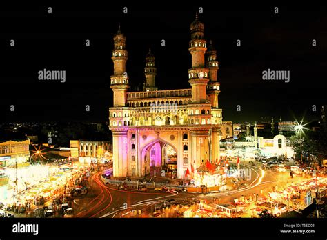
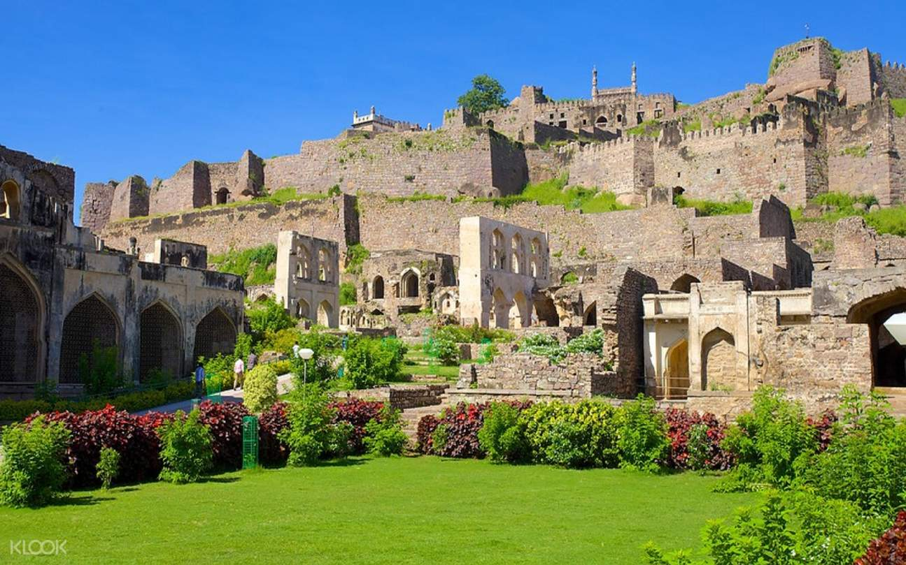

Welcome to Hyderabad - The City of Pearls
Hyderabad is a vibrant city in southern India known for its rich history, culture, and iconic landmarks. It is a perfect blend of ancient heritage and modern development, making it a must-visit destination.
Key Attractions:
- Charminar - The iconic monument and mosque.
- Golconda Fort - A grand fortress with rich historical significance.
- Hussain Sagar Lake - A serene lake with a large Buddha statue.
- Ramoji Film City - The world's largest film studio complex.
- Salar Jung Museum - Home to an extensive collection of art and artifacts.
Cuisine:
Hyderabad is famous for its Hyderabadi Biryani, a flavorful rice dish, along with other delicacies like Haleem, Kebabs, and Irani Chai.
Best Time to Visit:
The best time to visit Hyderabad is from October to March when the weather is pleasant.
Images of Hyderabad:

